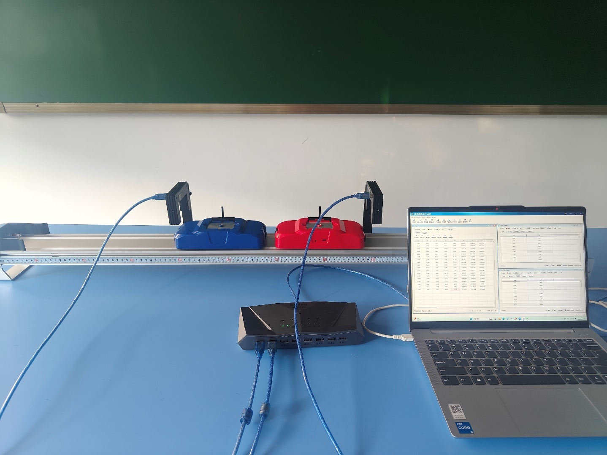
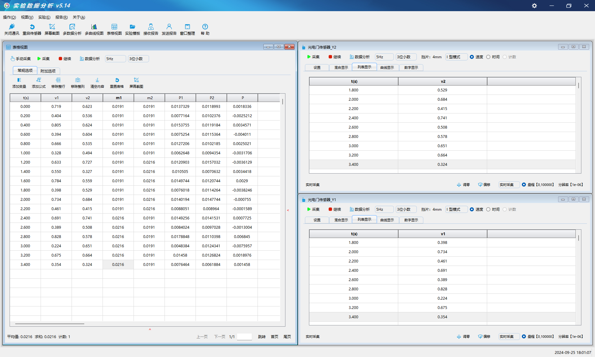

实验三十八 完全弹性碰撞
【实验目的】
利用碰撞实验，验证动量守恒定律。
【实验原理】
对于发生碰撞的两个物体来说，它们的mv之和在碰撞前后可能是不变的，物理学中把质量和速度的乘积mv定义为物体的动量，用字母P表示即P=mv。
弹性碰撞是指两个或多个物体在碰撞过程中，碰撞前后的总动量保持不变P初总=P末总。动能守恒：碰撞前后的总动能保持不变EK初总=EK末总。如果物体m1和m2沿着同一直线运动，碰撞前后的速度可以用以下方程式描述：m1v1+m2v2=m1v1′+m2v2′，其中m1和m2是物体质量，v1和v2是物体碰撞前的速度，v1′和v2′是碰撞后的物体速度。
【实验器材】
数据采集器、光电门传感器、多用力学导轨、配重铁片、电子秤、计算机等。
【实验装置】

【实验操作步骤】
1.按装置图搭建好实验环境。
2.打开计算机中的实验数据分析软件，选择网格视图。
3.把两辆小车经过电子秤测量出小车的质量，在网格视图中选择“添加变量”m1和m2，按小车的顺序连接上光电门传感器v1和v2，测量小车经过光电门的速度。
4.在网格视图中选择“添加公式”P1=m1*v1为第一辆小车的动量，P2=m2*v2为第二辆小车的动量，由于两辆小车是沿着相反的方向移动，所以总动量是P=P1-P2。
5.通过更改小车的质量，测出多组实验数据，并代入公式m1v1+m2v2=m1v1′+m2v2′计算出是否验证动量守恒。

【实验结论】
通过多种更改变量的情况下得出多组实验数据，经过数据分析可得出：在误差允许范围内，完全弹性碰撞前后系统总动量没有改变。